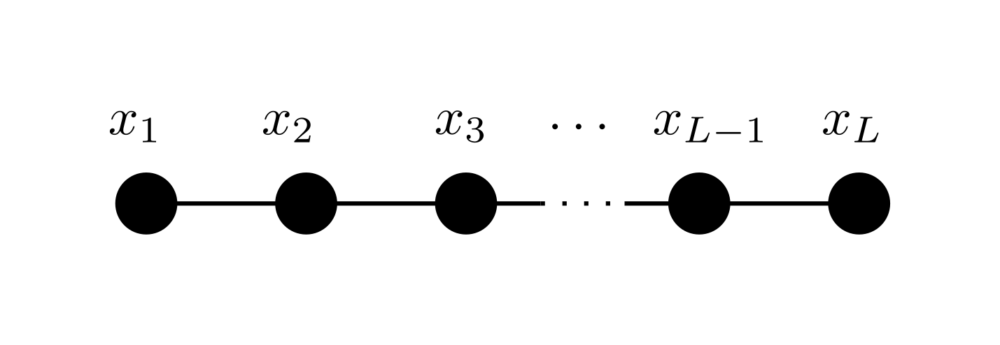

ChainModels.jl
This package provides utilities to deal with multivariate functions factorized over a one-dimensional chain, i.e. where each variable $x_i$ interacts only with $x_{i-1}$ and $x_{i+1}$
\[f(x_1,\ldots,x_L) = e^{f_1(x_1,x_2)} e^{f_2(x_2,x_3)} \cdots e^{f_{L-1}(x_{L-1},x_L)} = \prod_{i=1}^{L-1} e^{f_i(x_i,x_{i+1})}\]
where $x_i \in \mathcal{X}_i=\\{1,2,\ldots,q_i\\}$ and $f_i : \mathcal{X}\_i \times \mathcal{X}\_{i+1} \to \mathbb{R}$. Once properly normalized, these give probability distributions
\[p(x_1,\ldots,x_L) = \frac1Z\prod_{i=1}^{L-1} e^{f_i(x_i,x_{i+1})} \]
with $Z = \sum\limits_{x_1,\ldots,x_L}\prod\limits_{i=1}^{L-1} e^{f_i(x_i,x_{i+1})}$ the normalization constant.
In other words, a probability distribution is a chain model if its factor graph is a simple path:

Provided functionalities
For a chain of length $L$ with variables taking one of $q$ values, the following can be performed efficiently:
| Operation | Cost |
|---|---|
| Compute normalization $Z$ | $\mathcal O (Lq^2)$ |
| Compute marginals $p(x_i)$ | $\mathcal O (Lq^2)$ |
| Compute neighbor marginals $p(x_i,x\_{i+1})$ | $\mathcal O (Lq^2)$ |
| Compute pair marginals $p(x_i,x_j)$ | $\mathcal O (L^2q^2)$ |
| Draw a sample from $p$ | $\mathcal O (Lq^2)$ |
| Compute the entropy S[p]=-\sum_xp(x)\log p(x) $ | $\mathcal O (Lq^2)$ |
| Fit Maximum Likelihood parameters from $N$ samples | $\mathcal O (NLq^2)$ |
Quickstart
Install with
import Pkg; Pkg.add("ChainModels")Create a ChainModel and compute some stuff
using ChainModels, Distributions
L = 100
qs = fill(20, L)
f = [randn(qs[i], qs[i+1]) for i in 1:L-1]
p = ChainModel(f)
Z = normalization(p)
marg = marginals(p)
neigmarg = neighbor_marginals(p)
pairmarg = pair_marginals(p)
S = entropy(p)
x = rand(p, 500)
l = loglikelihood(p, x)
p_hat = fit_mle(ChainModel, x)Examples of chain models
Efficient operations
The efficiency of the operations mentioned above relies on some strategic pre-computations. For example, partial normalizations from the left and from the right ($l$ and $r$, respectively)
\[\begin{eqnarray} l_{i}(x_{i+1}) =& \log\sum\limits_{x_1,\ldots,x_i}\prod\limits_{j=1}^i e^{f_j(x_j,x_{j+1})}\\ r_{i}(x_{i-1}) =& \log\sum\limits_{x_i,\ldots,x_L}\prod\limits_{j=i-1}^{L-1} e^{f_j(x_j,x_{j+1})} \end{eqnarray}\]
can be used to compute normalization, single-variable and nearest-neighbor marginals
\[\begin{eqnarray} Z =& \sum\limits_{x_i} e^{l_{i-1}(x_i)+r_{i+1}(x_i)}\quad\forall i\\ p(x_i) =& \frac1Z e^{l_{i-1}(x_i)+r_{i+1}(x_i)}\\ p(x_i,x_{i+1}) =& \frac1Z e^{l_{i-1}(x_i) + f_i(x_i,x_{i+1}) + r_{i+2}(x_{i+1})}\\ \end{eqnarray}\]
Notes
- The exponential parametrization is favorable because it puts no constraint on the values taken by the $f_i$'s, which can be positive or negative. One might as well parametrize directly as $f(x)=\prod\limits_{i=1}^{L-1} g_i(x_i,x_{i+1})$ with $g_i(x_i,x_{i+1})=e^{f_i(x_i,x_{i+1})}$, but must always ensure $g_i \ge 0$.
K-Chain Models
This package supports a more general type of Chain Models where interactions involve not just two neighboring variables but a general number $K$. The distribution in this case reads
\[p(x_1,\ldots,x_L) = \frac1Z\prod_{i=1}^{L-K+1} e^{f_i(x_i,x_{i+1}, \ldots, x_{i+K-1})} \]
A K-Chain Model can be constructed as
chain = KChainModel(fK)where fK is a vector of length $L-K+1$ whose i-th element is an array of size $q_i, q_{i+1}, \ldots, q_{i+K-1}$.
Special constructors are provided for the special cases $K=1$, where the chain reduces to a fully factorized model where each variable is independent of the others
chain = FactorizedModel(f1)and $K=2$, as shown above
chain = ChainModel(f2)